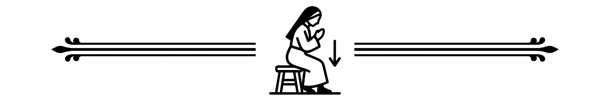

wewnątrz tekstu oznacza miejsce, w którym czyniony jest znak krzyża.
wewnątrz tekstu oznacza miejsce, w którym czyniony jest znak krzyża.Serdecznie witamy Was w dniu naszego ślubu i dziękujemy, że jesteście dziś z nami.
Za chwilę rozpoczną się obrzędy zaślubin, po których zostanie odprawiona Msza Święta za nowożeńców w tradycyjnym rycie rzymskim — tym samym, w którym jeszcze ponad pół wieku temu modlił się cały Kościół. Liturgia sprawowana jest po łacinie, kapłan wraz z wiernymi zwrócony jest ku ołtarzowi, a wiele modlitw odmawia po cichu. Ten mszalik pomoże Wam śledzić jej przebieg i włączyć się w modlitwę.
Do Komunii Świętej mogą przystąpić jedynie katolicy pozostający w stanie łaski uświęcającej, to znaczy bez grzechu ciężkiego niewyznanego w ważnej spowiedzi świętej, którzy zachowali godzinny post eucharystyczny. Komunię przyjmuje się na klęczkach, do ust. Pozostałych gości zachęcamy do Komunii duchowej.
Teksty modlitw i czytań podane są równolegle w dwóch kolumnach: po łacinie i po polsku. Kolumna łacińska znajduje się zawsze bliżej środka książki, a polska — bliżej brzegu strony.
Czerwone litery przed tekstem wskazują, kto go wypowiada:
Odpowiedzi oznaczone literą M. lub W. wierni mogą odmawiać razem z ministrantem. Czerwony krzyżyk wewnątrz tekstu oznacza miejsce, w którym czyniony jest znak krzyża.
Symbole w tekście wskazują, kiedy należy klęknąć, wstać lub usiąść:

usiąść wstać
wstać